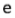
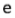
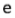

Click to select the blue curve you want to move. You can shift it to the left with key "A" and to the right with key "D".
This graph works better on Chrome browser.

 



Click to select the blue curve you want to move. You can shift it to the left with key "A" and to the right with key "D".
This graph works better on Chrome browser.

og.likes API. That story will just say
that you like an
article on TechCrunch. The story should only
be visible to you.